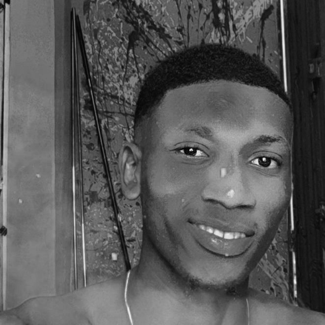

|

|
Hi! I am Salami Faruq Damilare and I'm a freelance Graphics designer. I am a computer science student currently studing at 200 level at kwara state university, malate Ilorin. I have Skill In Programming and Coding. I am Dedicated to Legitimacy and trust in my Work My skills are HTML,javascript,jQUery nad CSS the language used with my back end development skills are PHP,java and C# this are web development.I have studied to acquire these skills are advanced client side web development. |
| Home | Portfolio | Get in touch |
|---|